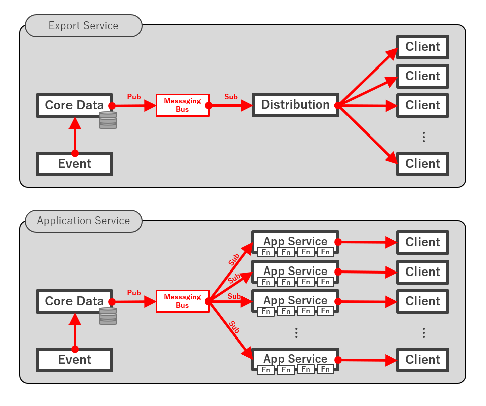

Lab 4 - データのエクスポート（MQTT）
データをエクスポートするには、Fuji リリースでは次の二種類の方法があります。
- エクスポートサービスを利用してエクスポートする
- アプリケーションサービスを利用してエクスポートする
アプリケーションサービスに関する公式ドキュメント では、エクスポートサービスの利用はまだサポートされるものの、今後はアプリケーションサービスの利用が推奨されています。
実際、エクスポートサービスはすでに標準の Docker Compose ファイルからは除外されており、エクスポートの機能はアプリケーションサービスに統合されているようです。
エクスポートサービスを利用したエクスポートの欠点として、
- エクスポートサービスは、登録されているすべてのクライアントにデータを順次配信するが、これがボトルネックになり、エンドポイント側の受信が遅延する
- 登録されているクライアントを管理することそれ自体のオーバヘッドと複雑さが EdgeX Foundry にとって負担である
- 特定のクラウドへのエクスポートに限定して作りこむのではなく、SDK を提供してクラウドプロバイダにとらわれない状態にすべきだ
などが挙げられています。ここでいう SDK とそれを使った実装がアプリケーションサービスなわけですが、アプリケーションサービスでは、
- コアサービス（データを ZeroMQ で配る Core Data）に直接つなげられることで、パフォーマンスの問題を排除する
- 開発者には、データが利用可能になったら直ちにそれに対して何らかの処理を行える手段が提供される
- 登録作業が不要である
などの点でよい感じになっています。
いまいち正しくない気もしますが、ざっくりまとめると、下図の上が下になったので、

エクスポートサービス（のディストリビューションサービス）がボトルネックにならなくなったし、値を好きに処理できる場所もできたよ！ ということかと思います。
そういうわけで、エクスポートサービスのなくなった世界でも生きていけるよう、エクスポートサービスを扱ったエントリと同様に、MQTT トピックと REST エンドポイントへ、アプリケーションサービスを使ってエクスポートできる状態を作ります。
必要なファイルの用意
前のラボでリポジトリをクローンしていない場合はクローンします。
| $ git clone https://github.com/kurokobo/edgex-lab-handson.git
|
今回は lab05 ディレクトリです。
アプリケーションサービス
上図のアプリケーションサービスの箱の中には、ファンクション（Fn で表記）を並べました。アプリケーションサービスでは、このように任意のファンクション群をパイプライン化してデータフローを定義できます。
例えば簡単な例では、標準で用意されているファンクションを並べるだけでも、
- デバイス名でフィルタするファンクション
- リソース名でフィルタするファンクション
- JSON 形式に変換するファンクション
- MQTT でエクスポートするファンクション
などのパイプラインが構成できます。現時点で利用できるファンクションは、SDK の README.md で確認できます。
構成の考え方
標準で実装されているアプリケーションサービスとして、app-service-configurable がありますが、これは、ひとつのパイプラインをひとつのインスタンスで処理する前提で作られているようです。また、パイプラインそのものは、インスタンスごとの設定ファイル configuration.toml で定義します。
つまり、コンテナ環境の例でいえば、冒頭の絵のように、
- 最終的に MQTT トピックにエクスポートする app-service-configurable コンテナ
- 最終的に REST エンドポイントにエクスポートする app-service-configurable コンテナ
など、app-service-configurable が、目的に応じて複数起動している状態を作るということです。
なお、コアサービスのホスト名やポート番号、MQTT ではブローカのホスト名など環境に依存する情報は、コンテナの場合は環境変数で Docker Compose ファイルから渡せるようになっています。エクスポートサービスでは API を叩いてクライアントとして登録する作業が必要でしたが、すべての構成をあらかじめファイルとして定義しておけるということですね。
設定ファイルの確認
コンテナの場合、デフォルトでコンテナ内の /res に、目的別に事前構成された configuration.toml がディレクトリを分けて配置されています。そして、起動時に渡す環境変数で、どのディレクトリの中身を利用するか指定します。
例えば、MQTT トピックへのエクスポートで利用する configuration.toml は以下です。
1
2
3
4
5
6
7
8
9
10
11
12
13
14
15
16
17
18
19
20
21
22
23
24
25
26
27
28
29
30 | $ cat mqtt-export/configuration.toml
...
[Writable.Pipeline]
ExecutionOrder = "TransformToJSON, MQTTSend, MarkAsPushed"
[Writable.Pipeline.Functions.TransformToJSON]
[Writable.Pipeline.Functions.MarkAsPushed]
[Writable.Pipeline.Functions.FilterByDeviceName]
[Writable.Pipeline.Functions.FilterByDeviceName.Parameters]
DeviceNames = ""
[Writable.Pipeline.Functions.FilterByValueDescriptor]
[Writable.Pipeline.Functions.FilterByValueDescriptor.Parameters]
ValueDescriptors = ""
[Writable.Pipeline.Functions.MQTTSend]
[Writable.Pipeline.Functions.MQTTSend.Parameters]
qos="0"
key=""
autoreconnect="false"
retain="false"
cert=""
persistOnError = "false"
[Writable.Pipeline.Functions.MQTTSend.Addressable]
Address= "localhost"
Port= 1883
Protocol= "tcp"
Publisher= "AppServiceConfigurable-mqtt-export"
User= ""
Password= ""
Topic= "edgex-events"
...
|
ExecutionOrder に含まれる関数がパイプラインとして順次実行されていきます。この例だと、JSON に変換してから MQTT トピックに送信しています。
利用する関数は下で列挙されていますが、ExecutionOrder に含まれないものは実際には利用されないようです。デバイス名でフィルタする関数（FilterByDeviceName）なども書かれていますが、使いたいなら自分で ExecutionOrder に書いてね、ということでしょう。
また、MQTT ブローカのホスト名に localhost が指定されていたり、トピック名が edgex-events になっていたりしますが、先述のとおり、この辺りは環境変数で書き換えますのでこのままで問題ありません。
同様に、REST エンドポイントへのエクスポートで利用する設定ファイルは以下です。
1
2
3
4
5
6
7
8
9
10
11
12
13
14
15
16
17
18
19
20
21
22
23
24 | $ cat http-export/configuration.toml
...
[Writable.StoreAndForward]
Enabled = false
RetryInterval = "5m"
MaxRetryCount = 10
[Writable.Pipeline]
UseTargetTypeOfByteArray = false
ExecutionOrder = "FilterByDeviceName, TransformToJSON, HTTPPostJSON, MarkAsPushed"
[Writable.Pipeline.Functions.TransformToJSON]
[Writable.Pipeline.Functions.MarkAsPushed]
[Writable.Pipeline.Functions.FilterByDeviceName]
[Writable.Pipeline.Functions.FilterByDeviceName.Parameters]
DeviceNames = ""
[Writable.Pipeline.Functions.FilterByValueDescriptor]
[Writable.Pipeline.Functions.FilterByValueDescriptor.Parameters]
ValueDescriptors = ""
[Writable.Pipeline.Functions.HTTPPostJSON]
[Writable.Pipeline.Functions.HTTPPostJSON.Parameters]
url = "http://"
persistOnError = "false"
...
|
環境変数による柔軟なオーバライド
設定ファイルに含まれるパラメータは、実装から推測すると、おそらくすべて環境変数で書き換えが可能です。セクション名の区切り文字を _ に置換して、さらに _<パラメータ名> を付与して環境変数として与えれば、オーバライドされるようでした。
例えば、ExecutionOrder 自体も、Writable_Pipeline_ExecutionOrder 環境変数として与えられます。例えば先述の mqtt-export の ExecutionOrder には FilterByDeviceName が含まれせんが、環境変数で以下を与えることで、このフィルタも有効化できます。
- 環境変数 Writable_Pipeline_ExecutionOrder
- FilterByDeviceName, TransformToJSON, MQTTSend, MarkAsPushed
- 環境変数 Writable_Pipeline_Functions_FilterByDeviceName_Parameters_DeviceNames
今回の構成の定義
では、今回用の構成を作ります。先の通り、環境依存の値は環境変数経由で与えればよいので、今回編集するのは、Docker Compose ファイルです。
Docker Compose ファイルには、もともと、ルールエンジンにデータを送る用の app-service-rules が定義されています。
1
2
3
4
5
6
7
8
9
10
11
12
13
14
15
16
17
18
19
20
21
22
23 | $ cat docker-composer.yml
...
app-service-rules:
image: edgexfoundry/docker-app-service-configurable:1.0.0
ports:
- "48096:48096"
container_name: edgex-app-service-configurable-rules
hostname: edgex-app-service-configurable-rules
networks:
edgex-network:
aliases:
- edgex-app-service-configurable-rules
environment:
<<: *common-variables
edgex_service: http://edgex-app-service-configurable-rules:48096
edgex_profile: rules-engine
Service_Host: edgex-app-service-configurable-rules
MessageBus_SubscribeHost_Host: edgex-core-data
depends_on:
- consul
- logging
- data
...
|
今回は、これに加えて、MQTT トピックにエクスポートする app-service-mqtt-export を追加しています。
1
2
3
4
5
6
7
8
9
10
11
12
13
14
15
16
17
18
19
20
21
22
23
24
25
26
27
28
29
30
31
32
33
34
35
36
37
38 | $ cat docker-composer.yml
...
app-service-mqtt-export:
image: edgexfoundry/docker-app-service-configurable:1.0.0
ports:
- "48097:48097"
container_name: edgex-app-service-configurable-mqtt-export
hostname: edgex-app-service-configurable-mqtt-export
networks:
edgex-network:
aliases:
- edgex-app-service-configurable-mqtt-export
environment:
<<: *common-variables
edgex_service: http://edgex-app-service-configurable-mqtt-export:48097
edgex_profile: mqtt-export
Service_Host: edgex-app-service-configurable-mqtt-export
MessageBus_SubscribeHost_Host: edgex-core-data
Writable_Pipeline_Functions_MQTTSend_Addressable_Address: 192.168.0.100
Writable_Pipeline_Functions_MQTTSend_Addressable_Port: 1883
Writable_Pipeline_Functions_MQTTSend_Addressable_Protocol: tcp
# Writable_Pipeline_Functions_MQTTSend_Addressable_Publisher:
# Writable_Pipeline_Functions_MQTTSend_Addressable_User:
# Writable_Pipeline_Functions_MQTTSend_Addressable_Password:
Writable_Pipeline_Functions_MQTTSend_Addressable_Topic: edgex-handson-topic
# Writable_Pipeline_Functions_MQTTSend_Parameters_Qos:
# Writable_Pipeline_Functions_MQTTSend_Parameters_Key:
# Writable_Pipeline_Functions_MQTTSend_Parameters_Cert:
# Writable_Pipeline_Functions_MQTTSend_Parameters_Autoreconnect:
# Writable_Pipeline_Functions_MQTTSend_Parameters_Retain:
# Writable_Pipeline_Functions_MQTTSend_Parameters_PersistOnError:
volumes:
- ./app-service-configurable:/res
depends_on:
- consul
- logging
- data
...
|
使っているコンテナイメージは、いずれもまったく同じです。ボリュームも同じマウントのしかたをしていますが、使う設定ファイルを edgex_profile で制御しています。また、読ませる設定ファイルに応じて、必要な設定を環境変数で入れています。
MQTT ブローカや REST エンドポイントのホスト名などは環境に合わせて適宜修正してください。ほかにも、configuration.toml で変更したい値があれば、環境変数として与えると変えられます。
また、今回はエクスポートサービスが起動しないようにコメントアウトしています。
起動
下準備として、MQTT ブローカを起動して、購読を開始します。
| $ docker run -d --rm --name broker -p 1883:1883 eclipse-mosquitto
$ docker run --init --rm -it efrecon/mqtt-client sub -h 192.168.0.100 -t "#" -v
|
この状態で、EdgeX Foundry を起動します。
動作確認
必要な設定はすべて環境変数を使って与えていたので、何もしないでも MQTT トピックと REST エンドポイントに値が届き出します。
| $ docker run --init --rm -it efrecon/mqtt-client sub -h 192.168.0.100 -t "#" -v
...
edgex-handson-topic {"id":"a11011bb-30cb-44fa-885c-8929c64e35b1","device":"Random-UnsignedInteger-Device","origin":1580015685340757500,"readings":[{"id":"26f50397-1e8b-4ca0-8db2-eeeee958a643","origin":1580015685326443600,"device":"Random-UnsignedInteger-Device","name":"Uint8","value":"90"}]}
edgex-handson-topic {"id":"526631fd-a0f7-437d-98a9-4f6eb8a06775","device":"Random-UnsignedInteger-Device","origin":1580015685369824800,"readings":[{"id":"91ef8066-5c31-4377-84e6-a6d517457f62","origin":1580015685356418200,"device":"Random-UnsignedInteger-Device","name":"Uint16","value":"27009"}]}
...
|
簡単ですね。
これらの値は、冒頭で紹介した通り、それぞれのアプリケーションサービスが直接コアサービス層から値を受け取って処理したうえでエクスポートしています。データパスが分散して並列化するので、エクスポートサービスを使っていた頃に存在していたボトルネックが回避されます。
まとめ
エクスポートサービスを利用しないエクスポート手段として、アプリケーションサービスを構成して試しました。
使ってみると、確かにこのアーキテクチャのほうが素直で圧倒的に使い勝手が良いです。家の環境もこっちに置き換えました。
現段階ではバンドルされている関数は多くないですが、今後この辺りも充実してくることが期待できそうです。